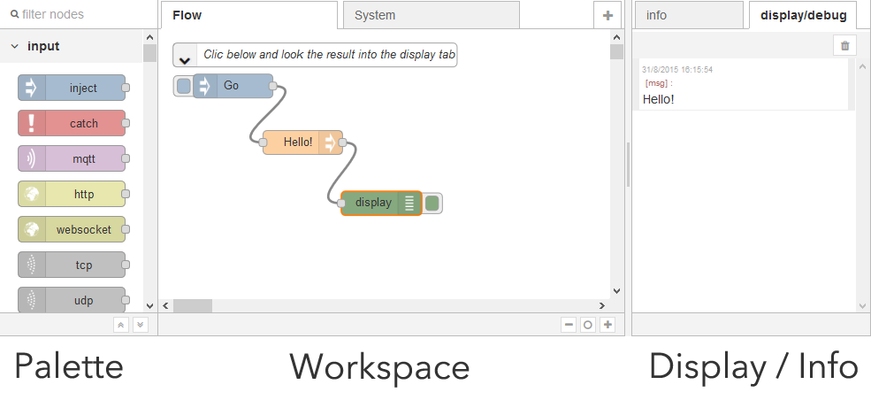
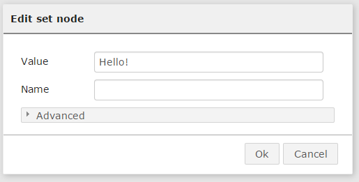

Discover the Thingbox
This part explains how to setup the Thingbox and the basics concepts of the graphical interface.
Start the ThingBox
Insert the SD card in the Raspberry Pi, connect it to the local network and switch it on. It takes about 50s to boot (on a Pi2). It may take longer in case of difficulties to login to a network.
*** note *** It is important to plug the local network wire BEFORE powering the Pi.
There is two possibilities to access the Thingbox:
- Best option: Use another computer (windows or Macintosh) to remotly access the Thingbox
- Plug a keyboard, a mouse and a screen on the Pi and use the embedded browser
IMPORTANT NOTE: You may find tutorials using the :1880 at the end of the browser URL. Now, the ThingBox uses the usual default port and :1880 should not be used any more.
On Windows and Macintosh
To check that the installation went fine, launch your favorite browser on your PC and reach the following browser adress:
thethingbox.local/
The final “/” may be omitted, depending of the browser.
Note: Avoid the new Microsoft Edge which seems to have a very strange behavior…
Note: if you used the settings page to rename your Thingbox, say, to “myTTB”, the browser adress will be:
myTTB.local/
On the Raspberry Pi
You can directly use the Pi to use the Thingbox because it contains a desktop and a browser, BUT:
- It’s slower
- There is some browser incompatibility (not listed yet but as an example, the Node-RED tabs does not show unless you do something)
- A QWERTY keyboard is needed.
Log in with :
username : root password : raspberry
Use it’s integrated web browser (epiphany web browser, the red framed on the precedent picture) and go to the adress localhost
If you don’t have a QWERTY keyboard, you can set the keyboard layout with those steps:
- Type Ctrl+Alt+F1 to have a command line interface.
- Log in, be careful to keyboard layout for the password.
- Type dpkg-reconfigure keyboard-configuration
- A menu ask you to choose your keyboard model, let as is and press Enter.
- A menu ask you to choose a keyboard layout, select the one you want and press Enter.
- If you don’t see it, select Other, then, select the one you want, press Enter, reselect the one you want and press Enter.
- A menu ask you to choose the function for the key AltGr, let the default for the keyboard layout and press Enter.
- A menu ask you to choose the key for the Compose key/Multi key, let no compose key, unless you need it. Press Enter
- Then, a menu ask you to choose if Ctrl+Alt+Backspace sould terminate the X server, unless you need it, you can let on no and press Enter.
You need to reboot the Thingbox (type reboot) and your keyboard is now correctly configured ! If you want to go on GUI, type Ctrl+Alt+F7.
If it does not work !
Plug a Screen on the HDMI port, and look at the console for some errors.
The Thingbox home page
Now you are connected to the Thingbox:

- The left part is called the palette. It contains nodes. Each node gives a functionality.
- The middle part is the workspace, with tabs to organize the work (the system tab is for advanced users only). Nodes can be drag’n dropped from the palette to the workspace and linked each others to make a flow.
- The right part is the sidebar. It contains tabs that give informations: the info tab displays a documentation when a node is selected. The display tab contains output or errors from the flow.
If you don’t have the sidebar, open it with : Ctrl-space, or via the dropdown menu.
Run the flow
You can click on the left part of the Go node. This injects to the hello node (whose job is to put hello on the main track of the flow, known as the payload), and then to the display node whose job is to display the payload.
If you now select the display tab, you should see the output:
Modify the flow
Each node can be tunned by double clicking it. Double click on the Hello node (which was built by dragging a node Set whose job is to change the value of the payload track of the flow):

You can change the value to “Hello world” and click ok.
Now a particular point should be understood:the browser you are looking at is running on your computer, not on the Thingbox. You just edit the flow on your computer the same way you edit your Facebook page.
Each the modification of the flow is complete, it must be sent to the Thingbox where it runs.
Use the “Activate” button for that:
Now you can hit the Go bouton again!
Important note: the Pi need about 40s to definitively write the flow: do NOT power off or reboot the Pi before waiting this delay after pressing the Activate button, the flow may be lost!!!
Next!
Discover the visual editor and build your own flow!